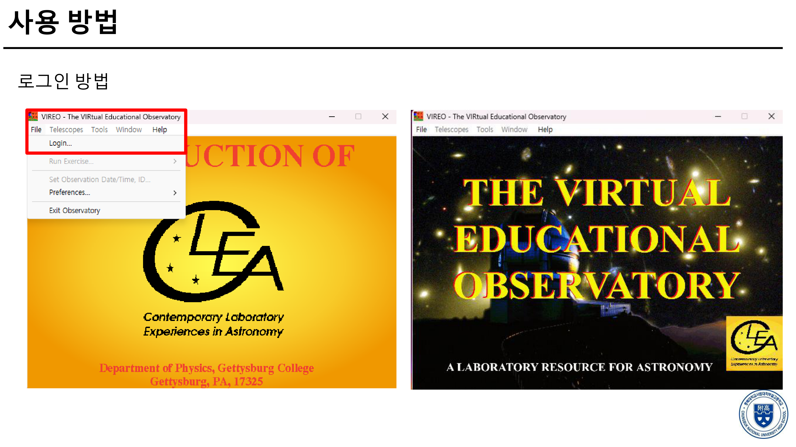
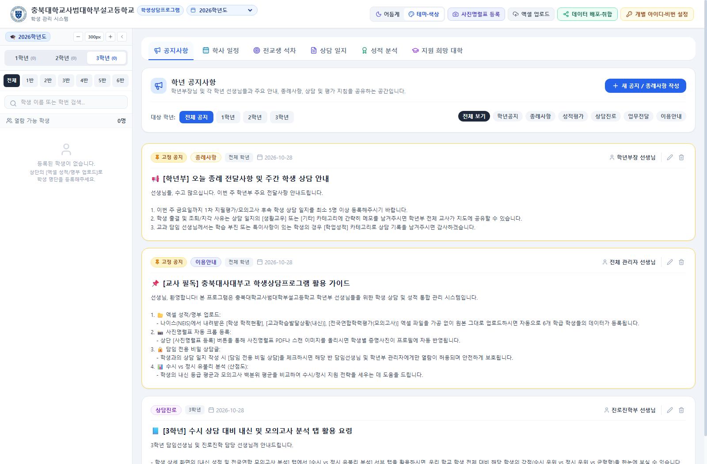
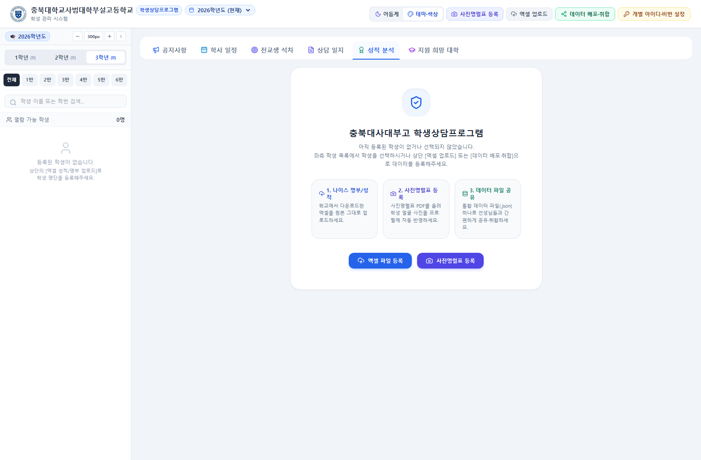
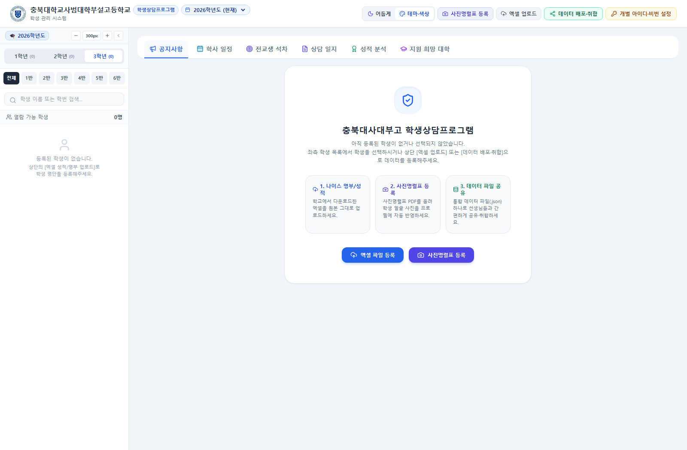

학생들과 함께 했던 탐구활동입니다.
현대 천문학 가상 관측 소프트웨어 CLEA VIREO를 활용하여 13개 실제 외부 은하의 겉보기 등급과 흡수선 스펙트럼(적색 편이)을 직접 관측·측정하고, 허블-르메트르 법칙 분산형 그래프 작도와 추세선 분석으로 우주 팽창률(허블 상수 H)을 도출해보는 학생 주도 천체물리학 탐구활동입니다.

교실 수업 및 학년부 교사업무를 혁신하는 소프트웨어와 실용 웹 유틸리티입니다.
GradeHub: School Counseling & Academic Record Management Platform
고등학교 학년부 선생님들이 나이스(NEIS) 엑셀 성적표와 학적을 수정 없이 100% 원본 그대로 업로드하여, 내신/모의고사 성적 추이 그래프, 수시 6장 목표 대학 및 수능 최저학력기준 실시간 자동 판정, 누적 상담일지, 사진명렬표 자동 크롭까지 한눈에 관리하는 교사용 올인원 업무 솔루션입니다.



학생 번호 범위 지정, 중복 당첨 방지, 역동적인 룰렛 사운드와 함께 수업 참여도를 극대화하는 추첨기입니다.
대형 TV 화면에 최적화된 풀스크린 타이머. 1분·3분·5분·10분 원클릭 프리셋 및 종료 카운트다운 비프음 제공.
해당 조건에 일치하는 활동 기록이 없습니다.
2020.3.~2023.2. 보은중학교 교사
2023.3~2026.2 청주 양청고등학교 교사
2026.3~현재 충북대학교사범대학부설고등학교 교사